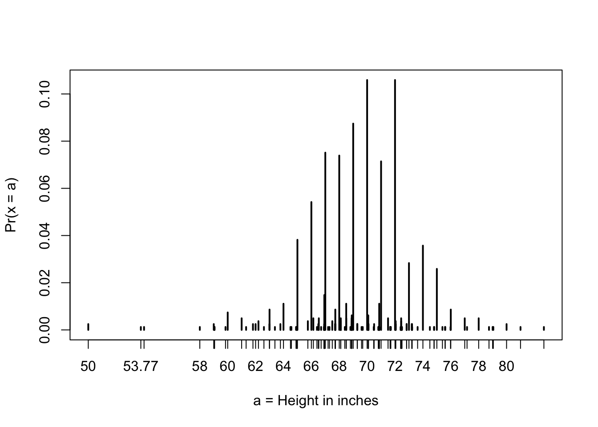

state abb region population total
1 Alabama AL South 4779736 135
2 Alaska AK West 710231 19
3 Arizona AZ West 6392017 232
4 Arkansas AR South 2915918 93
5 California CA West 37253956 1257
6 Colorado CO West 5029196 65Data Science: Data Visualization
1 Welcome!
1.1 What is data visualization?
Data visualization is the graphical representation of information and data. By using visual elements like charts, graphs, and maps, data visualization tools provide an accessible way to see and understand trends, outliers, and patterns in data. Additionally, it provides an excellent way for employees or business owners to present data to non-technical audiences without confusion.
In the world of Big Data, data visualization tools and technologies are essential to analyze massive amounts of information and make data-driven decisions.
2 Introduction to Data Visualization and Distributions
2.1 Overview
After completing this section, we will:
understand the importance of data visualization for communicating data-driven findings.
be able to use distributions to summarize data.
be able to use the average and the standard deviation to understand the normal distribution
be able to access how well a normal distribution fit the data using a quantile-quantile plot.
be able to interpret data from a box plot
2.2 Introduction to Data Visualization
2.2.1 Key Point:
Plots of data easily communicate information that is difficult to extract from table of raw values.
Data visualization is a key component of exploratory data analysis (EDA), in which the properties of data are explored through visualization and summarization techniques.
Data visualization can help discover biases, systematic errors, mistakes and other unexpected problems in data before those data are incorporated into potentially flawed analysis.
Basics of data visualization and EDA will be covered in R by using the ggplot2 package and motivating examples from world health, economics and infections disease.
2.2.2 Code:
2.3 Introduction to Distributions
2.3.1 Key Points:
(Variance/Deviation Var)方差: 方差越大，数据的波动越大；方差越小，数据的波动就越小。
(Standard Deviation)标准差: 方差开根号。
The most basic statistical summary of a list of object is its distribution.
We will learn ways to visualize and analyze distributions in the upcoming videos.
In some cases, data can be summarized by two-number summary: the average and standard deviation.I will learn to use data visualization to determine when that is appropriate.
2.4 Data Types
In R, there are 6 basic data types:
logicalnumericintegercomplexcharacterraw
Important
Categorical data are variables that are defined by a small number of groups.
Ordinal categorical data have an inherent order to the categories (mild/medium/hot, for example).
Non-ordinal categorical data have no order to the categories.
Important
Numerical data take a variety of numeric values.
Continuous variables can take any value.
Discrete variables are limited to sets of specific values.
flowchart LR
A[Main variable types] --> B{Catrgorical}
A[Main variable types] --> C{Numeric}
B{Catrgorical} --> D[ordinal]
B{Catrgorical} --> E[non-ordinal]
C{Numeric} --> F[continuous]
C{Numeric} --> G[discrete]
2.4.1 Exercise
show the code
2.5 Describe Heights to ET
2.5.1 key point:
- A distribution is a function or description that shows the possible values of a variable and how often those values occur.
- For categorical variables, the distribution describes the proportions of each category.
- A frequency table is the simplest way to show a categorical distribution. Use
prop.table()to convert a table of counts to a frequency table. Barplots display the distribution of categorical variables and are a way to visualize the information in frequency tables. - For continuous numerical data, reporting the frequency of each unique entry is not an effective summary as many or most values are unique. Instead, a distribution function is required.
- The cumulative distribution function (CDF) is a function that reports the proportion of data below a value a for all values of a :F(a)=Pr(x≤a).
- The proportion of observations between any two values a and b can be computed from the CDF as F(b)-F(a).
- A histogram divides data into non-overlapping bins of the same size and plots the counts of number of values that fall in that interval.
2.5.2 Code:
R 语言学习 -
table() 结果提取.2.6 Cumulative Distribution Function
Every continuous distribution has cumulative distribution function (CDF). The CDF defines the proportion of the data below a given value for all values of a :

As defined above, this plot of the CDF for male heights has height value a on the x-axis and the proportion of student with heights of that value or lower(F(a)) on the y-axis.
The CDF is essential for calculating probabilities related to continuous data. In a continuous dataset, the probability of a specific exact value is not informative because most entries are unique. For example, in the student heights data, only one individual reported a height of 68.8976377952726 inches, but many students rounded similar heights to 69 inches. If we computed exact value probabilities, we would find that being exactly 69 inches is much more likely than being a non-integer exact height, which does not match our understanding that height is continuous. We can instead use the CDF to obtain a useful summary, such as the probability that a student is between 68.5 and 69.5 inches.
For datasets that are not normal, the CDF can be calculated manually by defining a function to compute the probability above. This function can then be applied to a range of values across the range of the dataset to calculate a CDF. Given a datasetmy_data, the CDF can be calculated and plotted like this:
R语言中的[
apply()]，[lapply()]，[sapply()]，tapply()函数以及示例2.6.1 Code for CDF:
2.6.2 Code for student height:
show the code

The CDF defines that proportion of data below a cut-off a. To define the proportion of values above a, we compute: 1-F(a)
To define the proportion of values between a and b, we compute: F(b)-F(a)
Note that the CDF can help compute probabilities. The probability of observing a randomly chosen value between a and b is equal to the proportion of values between a and b, which we compute with the CDF.
2.7 Smooth Density Plots
2.7.1 Key Point:
A further note on histograms
The choice of binwidth has a determinative effect on sharp. There is no “correct” choice for binwidth, and you can sometimes gain insights into the data by experimenting with binwidths.
Smooth density plots can be thought of as histograms where the binwidth is extremely or infinitely small. The smoothing function makes estimates of the true continuous trend of the data given the available sample of data points.
The degree of smoothness can be controlled by an argument in the plotting function.
While the histogram is an assumption-free summary, the smooth density plot is shaped by assumptions and choices you make as a data analyst.
The y-axis is scaled so that the area under the density curve sums to 1. This means that interpreting value on the y-axis is not straightforward. To determine the proportion of data in between two values, compute the area under the smooth density curve in the region between those values.
An advantage of smooth densities over histograms is that densities are easier to compare visually.
2.8 Normal Distribution
2.8.1 Key Points:
-
- is centered around one value, the mean
- is symmetric(对称) around the mean.
- is defined completely by its mean(\mu) and standard deviation(\sigma)
- Always has the same proportion of observations within a given distance of the mean (for example, 95% with 2\sigma)
The standard deviation is the average distance between a value and the mean value.
Calculate the mean using the
mean()function.Calculate the standard deviation using the
sd()function or manually.Standard units describe how many standard deviations a value is away from the mean. The z-score, or number of standard deviation an observation is away from the mean \mu:
z = (x-\mu)/\sigma
Computer standard units with the
scale()function.Important: to calculate the proportion of value that meet a certain condition, use the
meanfunction on a logical vector. BecauseTRUEis converted to 1 andFALSEis converted to 0, taking the mean of this vector yields the proportion ofTURE.
2.8.2 Equation for the normal distribution
The normal distribution is mathematically defined by the following formula for any mean \mu and standard deviation \sigma:
Pr(a < x < b) = \int_{a}^b\frac{1}{\sqrt{2\pi\mu}}{e}^{-\frac{1}{2}(\frac{x-\mu^2}{\sigma})}dx
When standard unites z=0, the normal distribution is at a maximum, the mean \mu. The function is defined to be symmetric around z=0.
The normal distribution of z-score is called the standard normal distribution and is defined by \mu=0 and \sigma=1.
Z-score are useful to quickly evalute whether an observation is average or extreme. Z-scores near 0 are average. Z-score above 2 or below -2 are significantly above or blew the mean, and z-scores above 3 or below -3 are extrmely rate.
2.8.3 Code:
show the code
# define x as vector of male heights
library(tidyverse)
library(dslabs)
data(heights)
index <- heights$sex=="Male"
x <- heights$height[index]
# calculate the mean and standard deviation manually
average <- sum(x)/length(x)
SD <- sqrt(sum((x-average)^2)/length(x))
# built-in mean and sd functions - note that the audio and printed value disagree
average <- mean(x)
SD <- sd(x)
c(average = average, SD = SD)
# calculate standard units
z <- scale(x)
# calculate proportion of value within 2 SD of mean
mean(abs(z) < 2)function
sd():The built-in R function sd() calculates the standard deviation, but it divides by length(x)-1 instead of length(x). When the length of the list is large, this difference is negligible and you can use the built-in sd() function. Otherwise, you should compute σ by hand. For this course series, assume that you should use the sd() function unless you are told not to do so.Here we will learn more about benchmark z-score value and their corresponding probabilities.
2.8.4 The 68-95-99.7 Rule
The normal distribution is associated with the 68-95-99.7 rule. This rule describes the probability of observing events within a ceration number of standard deviations of the mean.

The probability distribution function for the normal distribution is defined such that:
- About 68% of observations will be within one standard deviation of the mean(\mu\pm\sigma). In standard units, this is equivalent to a z-score of |z|\leq2

- About 95% of observations will be within two standard seviations of the mean(\mu\pm2\sigma). In standard units, this is equivalent to a z-sore of |z|\leq2.

- About 99.7% of observations will be within three standard deviations of the mean(\mu\pm3\sigma). In standard units, this is equivalent to a z-score of |z|\leq3.

2.9 The Normal CDF and pnorm
2.9.1 Key points:
The normal distribution has a mathematically defined CDF which can be computed in R with the function
pnorm.pnom(a, avg, s)gives the value of the cumculative distribution function F(a) for the normal distribution defined by average avg and standard deviation s.we say that a random quantity is normally distributed with average avg and standard deviation s if the approximate pnorm(a, avg, s) holds for all values of a.
If we are willing to use the normal approximation for height, we can estimate the distribution simply from the mean and standard deviation of our values.
If we treat the height data as discrete rather than categorical, we see that the data are not very useful because integer values are more common that expected due to rounding. This is called discretization.
With rounded data, the normal approximation is particularly useful when computing probabilities of intervals of length 1 that include exactly over integer.
2.9.2 Code: Using pnorm to calculate probabilities
Given male heights x:
we can estimate the probability that a male is taller than 70.5 inches with:
2.9.3 Code: Discretization and the normal approximation
show the code

show the code
# probabilities in actual data over length 1 ranges containing a integer
mean(x <= 68.5) - mean(x <= 67.5)
mean(x <= 69.5) - mean(x <= 68.5)
mean(x <= 70.5) - mean(x <= 69.5)
# probabilities in normal approximation match well
pnorm(68.5, mean(x), sd(x)) - pnorm(67.5, mean(x), sd(x))
pnorm(69.5, mean(x), sd(x)) - pnorm(68.5, mean(x), sd(x))
pnorm(70.5, mean(x), sd(x)) - pnorm(69.5, mean(x), sd(x))
# probabilities in actual data over other ranges don't match normal approx as well
mean(x <= 70.9) - mean(x <= 70.1)
pnorm(70.9, mean(x), sd(x)) - pnorm(70.1, mean(x), sd(x))2.10 Definition of quantiles
2.10.1 Definition of quantiles
Quantiles are cut off points that divide a dataset into intervals with set probability. The qth quantile is the value at which q% of the observation are equal to or less than that value.
2.10.2 Using the quantile function
Given a dataset data and desired quantile q, you can find the q the quantile of data with:
2.10.3 Percentiles
Percentiles are the quantiles that divide a dataset into 100 intervals each with 1% probability. You can determine all percentiles of a dataset data like this:
2.10.4 Quartiles
Quartiles divide a dataset into 4 parts each with 25% probability. They are equal to the 25th, 50th and 75th percentiles. The 25th percentile is also known as the 1st quartile, the 50th percentile is also konwn as the median, and the 75th percentile is also knowns as the 3rd quartile.
The summary() function returns the minimum, quartiles and maximum of a vector.
2.10.5 Examples
Load the heights dataset from the dslabs package:
Usesummaryon the heights$height variable to find the quartiles:
Min. 1st Qu. Median Mean 3rd Qu. Max.
50.00 66.00 68.50 68.32 71.00 82.68 Find the percentiles of height$height:
Confirm that the 25th and 75th percentiles match that 1st and 3rd quartiles. Note that quantile() returns a named vector. You can access the 25th and 75th percentiles like this (adapt the code for other percentile value):
2.11 Finding quantile with qnorm
2.11.1 Definiton of qnorm
简单来说,
qnorm是正态分布累积分布函数(CDF)的反函数， 也就是说它可以视为pnorm的反函数, 这里q指的是quantile, 即分位数The qnorm() function gives the theoretical value of a quantile with probability p of observing a value equal to or less than that quantile value a normal distribution with mean mu and standard deviation sigma:
By default, mu=0 and sigma=1. Therefore, calling qnorm() with no arguments gives quantiles for the standard normal distribution.
Recall that quantiles are defined such that p is the probability of a random observation less than or equal to the quantile.
2.11.2 Relation to pnorm
The pnorm() function gives the probability that a value from a standard normal distribution will be less than or equal to the quantile.
2.11.3 Realation to pnorm
The pnorm() function gives the probability that a value from a standard normal distribution will be less than or equal to a z-score value z. consider: pnorm(-1.96)\approx0.025 The result of pnorm() is the quantile. Note that: qnorm(0.025)\approx-1.96 qnorm() and pnorm are inverse functions: pnorm(qnorm(0.025))\equiv0.025
2.11.4 Theoretical quantiles
You can use qnorm() to determine the theoretical quantiles of a dataset: that is, the theoretical value of quantiles assuming that a dataset follows a normal distribution. Run the qnorm() function with the desired probabilities p, mean mu and standard deviation sigma.
Suppose male heights follow a normal distribution with a mean of 69 inches and standard deviation of 3 inches. The theoretical quantiles are:
Theoretical quantiles can be compared to sample quantiles determined with the quantile function in order to evaluate whether the sample follows a normal distribution.
2.12 Quantile-Quantile Plots
2.12.1 Key Points:
Quantile-quantile plots, or QQ-plot, are used to check whether distributions are well-approximated by a normal distribution.
Given a proportion p, the quantile q is the value such that the proportion of values in the data blew q is p.
In a QQ-plot, the sample quantiles in the observed data are compared to the theoretical quantiles expected from the normal distribution. If the data are well-approximated by the normal distribution, then the points on the QQ-plot will fall near the identity line(sample = theoretical).
Calculate sample quantiles (observed quantiles) using the
quantile()function.Calculate theoretical quantiles with the
qnorm()function.qnorm()will caculate quantiles for the standard normal distribution (\mu=0, \sigma=1) by default, but it can calculate quantiles for any normal distribution givenmean()andsd()arguments.
2.12.2 Code:
show the code
[1] 0.5147783show the code

show the code